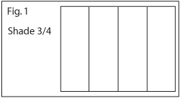
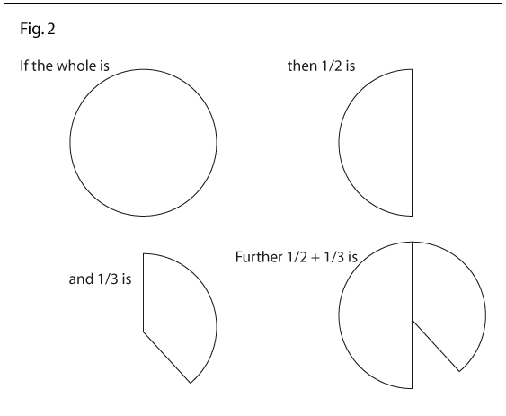
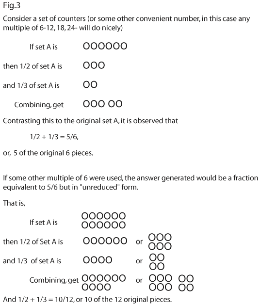

|
|||||||||||||||||||||||||||||||||||||||||||||||||||||||||||||||||||||||||||||||||||||||
|
Fractions:
Results and Implications
from National Assessment |
|||||||||||||||||||||||||||||||||||||||||||||||||||||||||||||||||||||||||||||||||||||||
|
By Thomas R. Post, University of Minnesota, Minneapolis, Minnesota
|
|||||||||||||||||||||||||||||||||||||||||||||||||||||||||||||||||||||||||||||||||||||||
|
Despite the recent introduction of the calculator and emphasis on the metric system, fractions continue to occupy an important place in school mathematics programs. Persuasive arguments for continued emphasis can be made not only because of their social utility but also because of their place in the development and structuring of mathematical ideas to follow. Accordingly, the National Assessment of Educational Processes (NAEP) allocated a substantial portion of the second mathematics assessment to fractions. This article reports the results of the 9- and 13-year-olds on those fraction exercises that dealt with concepts or with addition of fractions. Building upon some of the implications of the results, it then gives suggestions of ways to help students be more successful when adding fractions. Results Together, the results from exercises involving pictorial models, language of fractions, and equivalences of fractions give some indication of the students' ability to handle fraction concepts. There were three types of pictorial models used in the fraction exercises: region, set, and number line. Performance on several exercises involving regions showed that the concept of a fraction in this context is beginning to be established for 9-year-olds and is fairly well developed for 13-year-olds. In an exercise such as the one in figure 1, 62 percent of the 9-year-olds could shade the region to show the fraction. If the region was more complex, as the one in table 1, then the 9-year-olds experienced difficulty. Many of them responded with the number of shaded parts or indicated that they did not know. Part of the difficulty may have been the phrase "fractional part" but another similar exercise that did not use the phrase had the same results.  Another type of language problem may also help explain the results for 9-year-olds. Since this was an open-ended exercise, the students had to write the fraction. Only about 50 percent of the 9-year-olds could write the symbol when given the fraction orally. The connections among the models, words, and symbols have not been firmly established for this age group. Most of the 13-year-olds were able to give an acceptable response, such as 1/3 or 4/12, to the exercise in table 1.
This type of picture is often used to show' the equivalency of 1/3 and 4/12. It might be interesting to find out whether your students see both 1/3 and 4/12 in this picture and if they realize it shows the equivalence of these two fractions. The results of an exercise involving the set model are given in table 2. The correct response level for this exercise is slightly lower than the region model in table 1 and is much lower than on simple region model exercises. The incorrect responses show a similar pattern to those on the region model; however, there is even a greater tendency for 9-year-olds to give only the number of parts and for 13-year-olds to consider the ratio of the black to white squares. The 13-year-olds were also given a number-line model that required them to place a mark at a given fraction. Both parts of this exercise, which is shown in table 3, presented difficulties. Note that in part A over 20 percent marked 1/2 at a point between 1 and 2 and another 14 percent marked 1 or the halfway mark between the two labeled end points. Part B of this exercise illustrates the same type of error often made in measurement exercises, that of not focusing on the unit. This age group does not seem to have a firm grasp on fractions as they relate to a number line or to measurement. About three-fourths of the 13-year-olds could identify vocabulary such as improper fraction, denominator, or mixed numeral. Thus, the incorrect responses to those exercises summarized in table 4 were probably not due to lack of familiarity of the words. Overall, about two-thirds of the 13-year- olds could reduce fractions, change a fraction to an equivalent fraction, and relate improper and mixed numerals. Note that for the most- part the fractions involved were fairly familiar fractions. Although many of these skills are necessary when operating with fractions, they were often not used when needed in the addition or multiplication exercises. It appears that the connection between these skills and their use with operations has not been made. For example, few 13-year-olds used their ability to change mixed numerals to improper fractions when multiplying two mixed numerals.
The 9-year-olds were given two exercises involving fraction addition. One exercise included a picture of a region divided into the parts specified by the denominators of two like fractions. Only 11 percent responded correctly, however 16 percent responded correctly to the same problem without a picture. The results are so low and the difference between the correct percentages is so small that any contrast drawn between these two exercises is speculative. However, it does cause one to question how meaningful the work with pictures has been. Since less than 2 percent of the 9-year-olds have had little, if any, experience in adding fractions, these results are not surprising. Many more computation exercises involving addition of fractions were given to 13-year-olds. A sample of the released exercises is given in table 5. As expected, calculations with like denominators were significantly less difficult than those with unlike denominators. Note that the complexity of the unlike denominators had little to do with the level of the performance. It appears that if the students have learned a computational algorithm they can apply it in most situations. If they have not learned or cannot remember the algorithm, then they cannot reconstruct it or fall back on intuitive models to solve even simple problems (Carpenter, et. at. 1980). A great percentage (20 to 30 percent) of those who answered incorrectly added the numerators and the denominators. It is interesting to observe the sharp decrease in the number of students (10 percent) making this error when the problem involved like denominators. The inconsistency of using the incorrect strategy of adding numerators and denominators on unlike denominator exercises but not on like denominator is an indication of lack of understanding of why a common denominator has to be found. The conclusion that many students have only a rote procedure for adding fractions is further substantiated by the estimation exercise in table 6. The fact that performance is lower on this exercise than on the computation exercises again suggests that many students who can successfully apply an algorithm have little understanding of the underlying concepts and processes.
Implications Before examining several models that can be used in developing addition of fractions, look at the role that estimating results can take. Students who are using incorrect procedures should be helped to see that these procedures of- ten do not yield reasonable results. By requiring students to estimate the result prior 10 any attempted solution and then to anticipate the reasonableness of any answer generated, many errors may be eliminated. For example, 30 percent of the 13-year-olds added the numerators and denominators to find the sum of 1/2 and 1/3. A bit of reflection will indicate that 2/S is less than 1/2, one of the original addends. Students can be made to realize that it makes little sense to add two positive quantities and obtain a sum which is less than one of the original quantities. Or to think about it in a slightly different way, when adding a positive quantity to a number (in this case 1/2) the result should not be less than the original number. Asking children to think about the reasonableness of results will not necessarily help them to understand more about fractions and the processes with fractions. In particular, pointing out commonly made errors and discussing the unreasonableness of the results can help students avoid these procedures. Mathematical educators have tended to ignore the negative examples in the teaching process, probably because of a fear that such negative instances will inhibit learning of the correct procedure. Some research (Shumway 1969) has indicated that the provision of non-examples can contribute to the development of some concepts. It seems reasonable that a "non-algorithm" with explanations of why it does not work may also be useful in order to grasp a concept (or an operation), a person not only needs to know what it is but also what it is not. In the case of adding fractions, this may be particularly true after the operation of multiplying fractions has been developed. At this time, students may incorrectly generalize the rule for multiplying fractions (multiply numerators and denominators) to a rule for adding fractions. Pointing out the difference between these two algorithms and the unreasonableness of the resulting answers if they are interchanged, may be an important step in the development of fraction operations. Of course, these types of discussions depend upon students having a firm understanding of fractions as numbers. It is often easier to learn a rule than to understand why it works. But it is this intuitive understanding that will help eliminate confusion and give students the ability to work more comfortably with fractions. There are several models that are often recommended for use in conjunction with the development of the algorithm for addition of fractions. One of these is a continuous model illustrated here (fig. 2) by a region. The problem now becomes one of attempting to exactly cover 1/2 and 1/3 a whole number of times with the same fractional part. If students are given pieces of various sizes- 1/2's, 1/3's, 1/4's, 1/5's and so on-it will be seen that a whole number of 1/6's will exactly cover the new region. This is a good opportunity for students to manipulate various pieces of the circle and to "discover" a solution. Of course, it would also be possible to partition the circle into sixths prior to the presentation of the problem, although this would be a less desirable alternative.  This model depends upon the students being able to choose pieces of a circle that represent a fractional part of the whole. It does give an accurate description of addition (in the physical sense) and provides an estimate as to the size of the answer. For example, is 1/2 + 1/3 more or less than a whole? To move toward the algorithm, the student must see that both parts (halves and thirds) need to be expressed in terms of the same unit (sixths) before the sum is found. Thus, like denominators are needed before fractions can be added effectively. This model does not help students see how to find a common denominator, but it may make them aware of some of the common denominators of the more familiar fractions. After building this level of understanding of addition, it is necessary to look more carefully at equivalency of fractions and procedures for finding common denominators. Then the algorithm itself can be developed by depending upon students' ability to find equivalent fractions. Sometimes a discrete or set model may assist in the development of addition of fractions. The same exercise, 1/2 + 1/3, is depicted in figure 3 using a discrete model, a set of counters. As students perform several of these examples, they should be encouraged to choose an appropriate number of elements for set A. The procedures for determining this number forms a natural lead into the concept of lowest common denominator. That is, given two fractions, what is the smallest whole number of counters that can be used to model the process for determining their sum?  To use this model, students must have in their repertoire the set representation of a fraction. Recall that the results of this assessment indicated less proficiency with this representation than with the region (or continuous) mode 1. This does not mean that it should not be used, but before using, one must be certain that students are quite familiar and conversant with it. Finding 2/3 of a set of 12 is often more difficult than finding 2/3 of a rectangular region. Students must also have developed a sense of division and of multiples. Otherwise, the production of the set A that '"works" can be difficult. By the time students are introduced to addition of fractions, they should have this necessary background. At the same time you are developing this model, you will be developing the ability to find a fractional part of a whole number, a skill that is used in multiplying fractions. It is through trial-and-error and experimentation with producing set A that many powerful side outcomes may be reached. We have often rushed too quickly towards an efficient algorithm before students have had an opportunity to truly internalize the images and operations that these algorithms reflect. Closing Remarks Our task as mathematics teachers and mathematics educators is to reduce the degree to which students view mathematics as a bag of tricks containing several "magical" procedures which miraculously produce answers in narrowly defined situations. It is generally agreed that this can be done by emphasizing meaning and understanding prior to intensive work with formal algorithms. An analysis of the first mathematics assessment indicated that students "seem to operate on symbols without an adequate quantitative basis for their thinking." (Carpenter, et. al. 1976). This problem identified five years ago continues to exist. It seems apparent that more effort needs to be expended helping students to internalize the concept of fraction. This can be done through careful, meaningful instruction. For through meaning, applications and transfer become realistic expectations rather than hoped for outcomes. Although it is not realistic here to suggest specific instructional strategies (see Bennett and Davidson 1980, Coxford and Ellerbruch 1975, and Ellerbruch and Payne 1978, for example) it is appropriate to suggest that the vast majority of successful attempts to teach children common characteristics. They have
REFERENCES Bennett, Albert B.. Jr., and Patricia S. Davidson. Fraction Bars. Palo Alto. Calif.: Creative Publications. Carpenter, Thomas P., Terrence G. Coburn, Robert E. Reys, and James W. Wilson. "Notes from National Assessment: Addition and Multiplication with Fractions." Arithmetic Teacher 23 February 1976): 137-142. Carpenter, Thomas P., Mary Kay Corbitt, Henry S. Kepner, Jr., Mary Montgomery Lindquist, and Robert E. Reys. "Results and Implications of the Second NAEP Mathematics Assessments: Elementary School" Arithmetic Teacher 27 (April1980):10-12. 44-47. Coxford, Arthur F., and Lawrence W. Ellerbruch. "Fractional Numbers." In Mathematics Learning in Early' Childhood. Thirty-seventh Yearbook of the National Council of Teachers of Mathematics. Reston, Virginia: The Council, 1975. Ellerbruch, Lawrence W., and Joseph N Payne "A Teaching Sequence from Initial Concepts Through the Addition of Unlike Fractions In Developing Computational Skills. 1978 Yearbook of the National Council of Teachers of Mathematics. Reston. Virginia: The Council, 1978. Shumway, Richard. "The Role of Counter Examples in the Development of Mathematics Concepts of Eighth Grade Mathematics Students." Ph.D Dissertation, University of Minnesota, 1969. This article is part of the results of a grant (SED 7920086) from the National Science Foundation to the National Council of Teachers of Mathematics. Any opinions, findings, and conclusions or recommendations expressed in this publication are those of the authors and do not necessarily reflect the views of the National Science Foundation. (top) |
|||||||||||||||||||||||||||||||||||||||||||||||||||||||||||||||||||||||||||||||||||||||